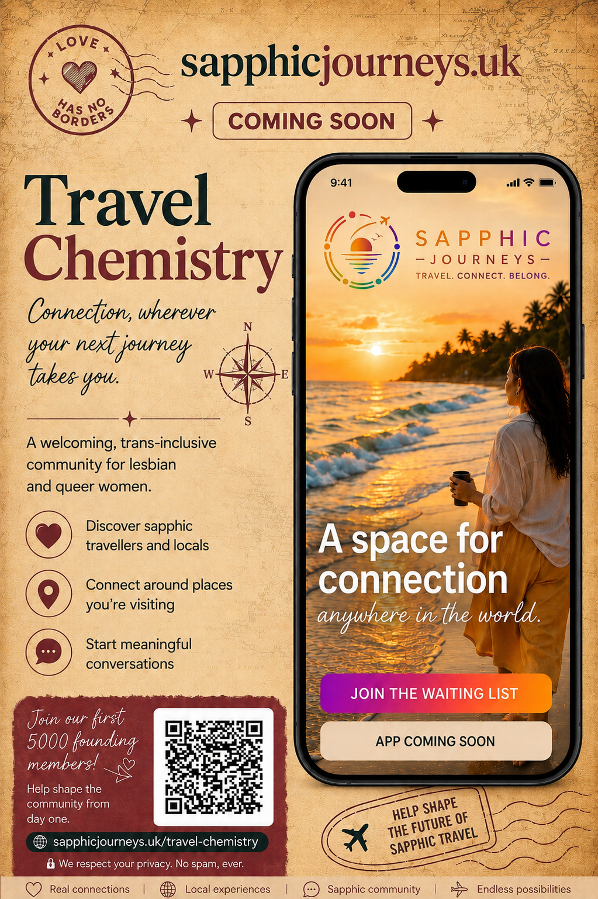
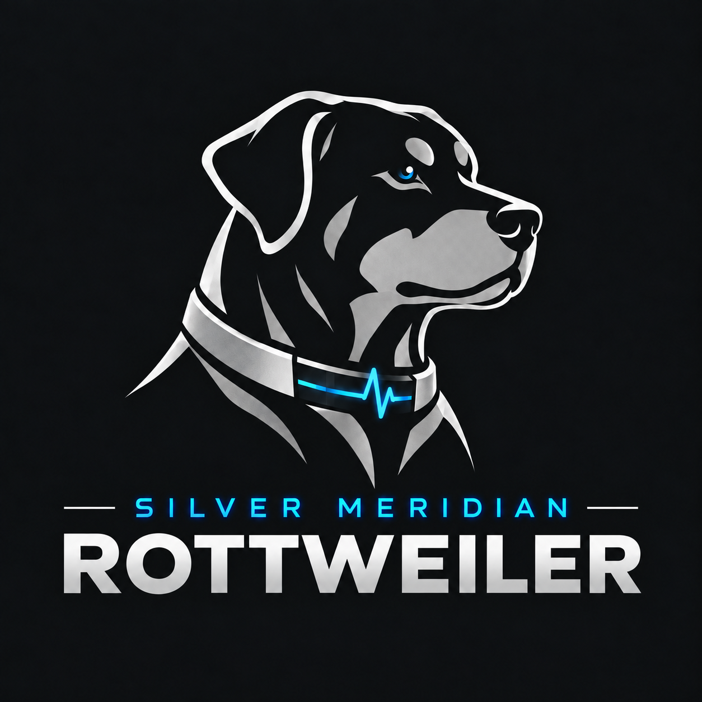

Native iOS apps
SwiftUI products designed to feel coherent, responsive and distinctly their own.
Independent app development · UK
Silver Meridian designs and develops purposeful digital products — from community platforms and festival apps to member experiences, admin systems and launch-ready iOS products.
What I build
I work across product thinking, interface design and implementation, with particular experience in community-led, event, travel and membership products.
SwiftUI products designed to feel coherent, responsive and distinctly their own.
Authentication, Firestore, Cloud Functions, media, permissions and operational tooling.
Features shaped around genuine user needs, with attention to flow, tone and visual consistency.
App Store readiness, testing, privacy surfaces, monetisation, analytics and final polish.
Current projects
A selection of current work spanning travel, community, events and Pride.

Launching soonLaunching soon
Travel chemistry, wherever your next journey takes you.
A new kind of sapphic travel experience, created around connection, belonging and the possibilities that begin when our journeys cross.
sapphicjourneys.ukEvents · Programme · Local discovery
A dedicated festival companion covering schedules, performers, local information, saved events, live festival content and organiser-facing administration.
Pride · Events · Community
A Pride-focused app bringing together events, schedules, supporter features, maps, notifications, community resources and administrative analytics.
Selected project details may evolve as products move through development and release.
Silver Meridian Technology
Silver Meridian develops proprietary technology to help understand, protect and promote digital products — bringing operational insight and creative production under one brand.
Operational intelligence
Our proprietary operational intelligence technology, designed to turn complex digital activity into clear, meaningful insight and help surface the things that deserve attention.
Observe. Detect. Understand.

Creative production
Our intelligent creative production environment, bringing brand identity, creative direction and production together to help turn ideas into coherent campaign assets.
Imagine. Direct. Produce.
Rottweiler looks inward at how the digital environment is behaving. Marketing Director looks outward at how the brand presents itself to the world.
About Silver Meridian
Silver Meridian is an independent digital studio focused on useful, well-considered apps. The work combines product strategy, interface design and hands-on development rather than treating them as separate disciplines.
I am especially interested in products that serve communities, bring people together, make events easier to navigate, or turn a strong idea into something people can genuinely use.
Work with me
I’m open to freelance development, product collaborations and selected community or event projects.